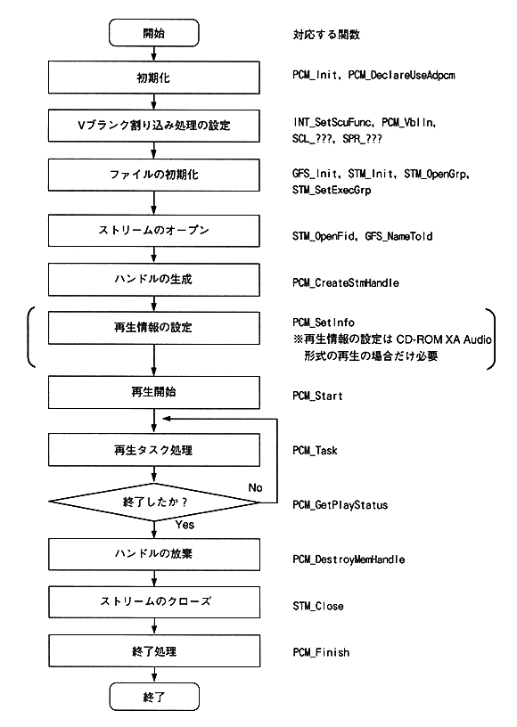

Return to previous page ｜ Return to menu ｜ Go to next page
-
3. Playback procedure
- (1) Playback procedure
- Figure 3.1 shows the playback procedure using the stream system.

Figure 3.1 Playback procedure during stream playback
Return to previous page ｜ Return to menu ｜ Go to next page